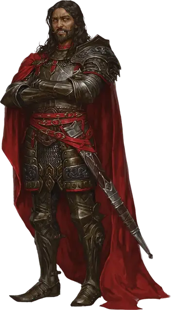

Кас, предатель
Kas the Betrayer
Средняя Нежить (Перевёртыш), законно-злая, именной НИП

Класс Доспеха 18 (латы)
Хиты 315 (30к8 + 180)
Скорость 40 футов
| мод | спас | ||
|---|---|---|---|
| СИЛ | 26 | +8 | +8 |
| ЛОВ | 20 | +5 | +5 |
| ТЕЛ | 22 | +6 | +13 |
| мод | спас | ||
|---|---|---|---|
| ИНТ | 24 | +7 | +7 |
| МДР | 19 | +4 | +11 |
| ХАР | 26 | +8 | +15 |
Навыки Восприятие +11, Магия +14, Обман +22, Скрытность +12
Иммунитет к урону некротическая энергия, яд; дробящий, колющий, рубящий от немагических атак
Иммунитет к состояниям испуг, истощение, отравление, очарование, паралич
Чувства тёмное зрение 120 футов, пассивное Восприятие 21
Языки Общий, Бездны, Драконий, Инфернальный
Опасность 23 (50000 опыта)
Бонус мастерства +7
Особенности
Нетерпеливый предатель. Кас добавляет 1к10 к своим броскам инициативы. Он совершает с преимуществом броски атаки по существам, которые испуганы.
Легендарное сопротивление (3/день). Если Кас проваливает спасбросок, он может вместо этого сделать спасбросок успешным.
Регенерация. Кас восстанавливает 20 хитов в начале своего хода, если у него есть хотя бы 1 хит. Если он получает урон излучением, эта особенность не действует в начале следующего хода Каса.
Особое снаряжение. Кас носит корона лжи [crown of lies].
Паучье лазание. Кас может лазать по сложным поверхностям, включая потолки, без совершения проверок характеристик.
Сила ночи. Кас не нуждается в гробу, и он пьет кровь не для насыщения, но для того, чтобы сеять ужас. Если Кас убит, то он возвращается к жизни спустя 1к100 ночей в незанятом пространстве Товага, его личного Домена Ужаса. Его можно окончательно уничтожить только пронзив колом сердце, а затем обезглавив. Кол должен быть сделан из дерева, выросшего на земле Орта, родного мира Каса.
Гиперчувствительность к солнечному свету. Кас получает урон излучением 20, если начинает ход под солнечным светом. Находясь на солнечном свету, он совершает с помехой броски атаки и проверки характеристик.
Действия
Мультиатака. Кас совершает три атаки Клинком мщения. Он может заменить одну из этих атак Укусом.
Клинок мщения. Рукопашная атака оружием: +15 к попаданию, досягаемость 5 футов, одна цель. Попадание: 20 (2к8 + 11) рубящего урона. Клинок совершает критические попадания на значениях «19» и «20» кости атаки.
Укус. Рукопашная атака оружием: +15 к попаданию, досягаемость 5 футов, одно существо. Попадание: 11 (1к6 + 8) колющего урона плюс 10 (3к6) урона некротической энергией. Максимум хитов цели уменьшается на количество, равное полученному урону некротической энергией, а Кас восстанавливает такое же количество хитов. Уменьшение хитов длится до тех пор, пока цель не окончит продолжительный отдых. Цель умирает, если этот эффект уменьшает максимум её хитов до 0. Гуманоид, убитый этим способом, а после закопанный в землю, восстает следующей ночью в качестве порождения вампира, находящегося под контролем Каса.
Бонусные действия
Изменение формы. Кас превращается в облако тумана Среднего размера или обратно в свой истинный облик. Всё носимое им снаряжение трансформируется вместе с ним, но несомое снаряжение не меняется. Он возвращается в свой истинный облик в случае смерти. Находясь в туманном облике, Кас обладает скоростью полета 20 футов, может парить и входить в пространство враждебных существ и останавливаться там. Кас может проходить сквозь любое пространство, не протискиваясь, до тех пор, пока сквозь это же пространство может пройти воздух, однако он не может проходить сквозь жидкости. Кас совершает с преимуществом спасброски Силы, Ловкости и Телосложения, получает иммунитет ко всему немагическому урону, за исключением того урона, который он получает как часть своей особенности Гиперчувствительности к солнечному свету. Находясь в туманном облике, Кас не может предпринимать действия, говорить или использовать объекты.
Угрожающий взгляд. Кас выбирает целью одно существо в пределах 60 футов от него, которое он может видеть. Цель должна преуспеть в спасброске Мудрости Сл 23, иначе становясь испуганной до начала следующего хода Каса.
Реакции
Парирование ответным ударом. Кас добавляет 3 к КД против одной рукопашной атаки, которая должна попасть по нему. Затем он совершает одну атаку Клинком мщения против атаковавшего, если тот находится в пределах досягаемости. В случае попадания цель получит дополнительные 9 (2к8) рубящего урона.
Легендарные действия
Кас может совершить 3 легендарных действия, выбирая из представленных ниже вариантов. За один раз можно использовать только одно легендарное действие, и только в конце хода другого существа. Кас восстанавливает использованные легендарные действия в начале своего хода.
Перемещение. Кас перемещается на расстояние, не превышающее его скорость, не провоцируя атаки.
Клинок (стоит 2 действия). Кас совершает одну атаку Клинком мщения.
Восстань, павший солдат (стоит 3 действия). Кас магическим образом призывает спектра [specter]. Спектр появляется в незанятом пространстве в пределах 30 футов от Каса, которому подчиняется. Спектр совершает свои ходы сразу после Каса. Он существует в течение 1 часа, пока не умрет Кас, либо пока Кас не будет отпустит его бонусным действием. У Каса не может быть призвано более двух спектров одновременно.
Описание
Предатель, Кровавая рука, Разрушитель — за свою долгую жизнь Кас заслужил множество титулов. Он вампир, легендарный фехтовальщик и безжалостный полководец, но движет им прежде всего одно — ненависть к Векне.
Кас выглядит как хорошо сложенный мужчина лет тридцати с волосами цвета вороньего крыла, хотя на самом деле он гораздо старше: клыки выдают его природу вампира.
Личность
Кас жесток, злобен и неумолим в своем стремлении отомстить Векне. Он охотно лжёт, нарушает обещания, предает союзников и насмехается над теми, кто попадается на его уловки. Кас не любит тех, кто не согласен с его превосходством и не помогает ему в достижении его целей.
В этом приключении Кас обманывает Ташу и Алустриэль — двух невероятно могущественных волшебниц. Помимо победы над Векной, Кас отчаянно хочет, чтобы они увидели и признали его силу.